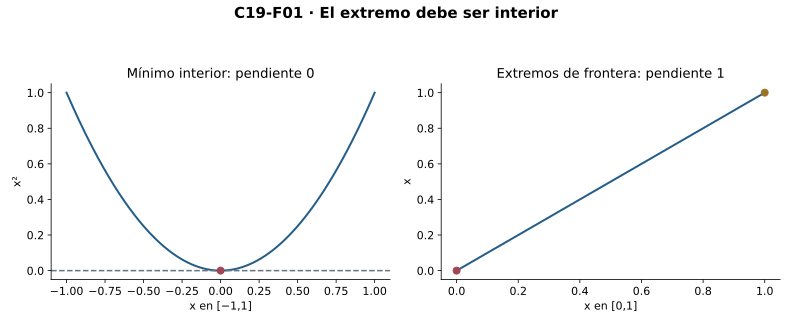
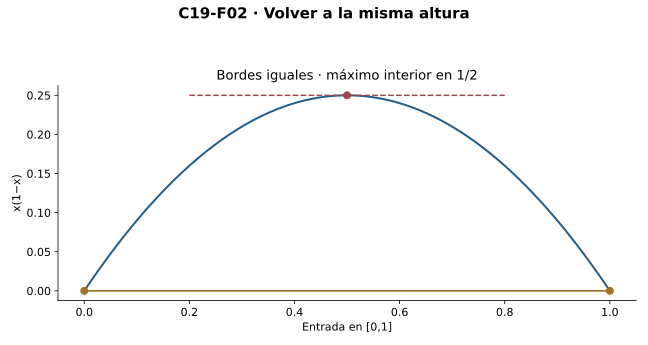
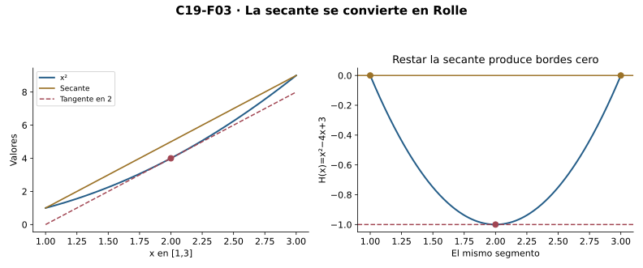
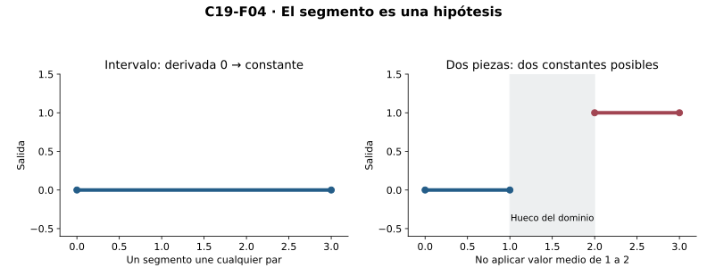
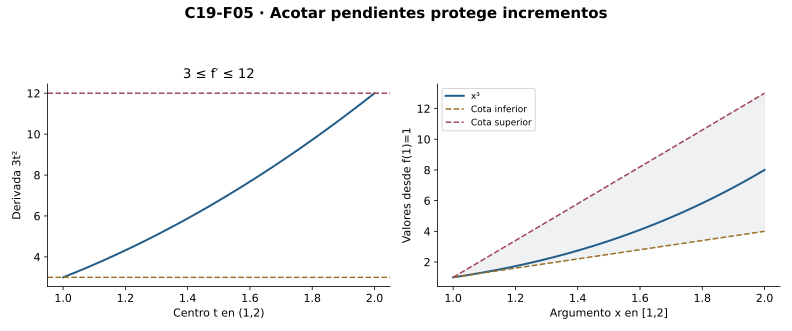
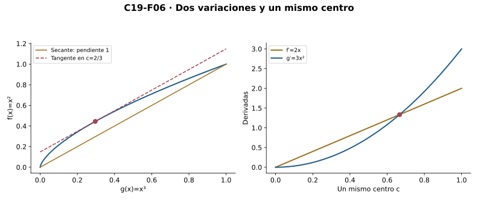
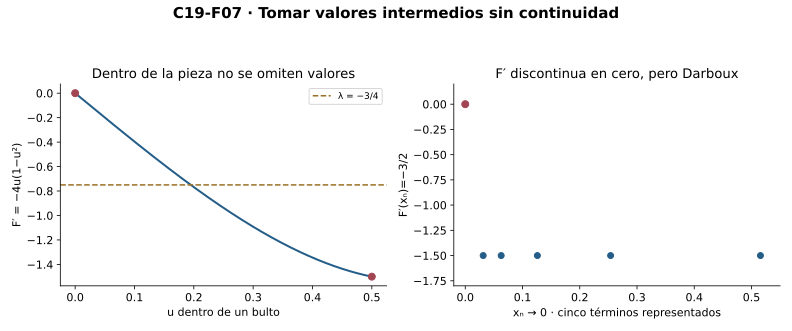
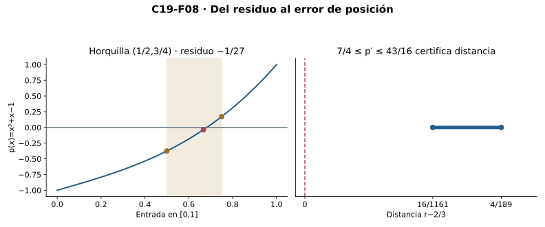

Capítulo 19 — De lo local a lo global
Índice del libro · Ejercicios de este capítulo
En C18, una derivada positiva permitía comparar los valores cercanos con el de un centro fijo. Para afirmar que una función crece entre dos entradas cualesquiera necesitamos relacionar ese incremento completo con alguna de sus pendientes locales. El intervalo conserva todas las entradas que hay entre ambas; sobre ese segmento, continuidad y derivabilidad harán posible encontrar una pendiente interior exactamente igual a la secante.
Los prerrequisitos centrales son continuidad de C14 y diferenciabilidad de C18. Se usan explícitamente los extremos alcanzados sobre segmentos compactos de C16 para Rolle y Darboux, y el valor intermedio de C15 para existencia de una raíz. Límites, acumulación, raíces y finitud son interfaces heredadas. La cadena lógica es Fermat, Rolle y valor medio, seguida de consecuencias sobre signos, cotas, dos funciones, valores intermedios de derivadas y ceros. No suponemos continuidad de la función derivada ni usamos convexidad, segunda derivada, Taylor, integrales o L’Hôpital.
19.1. Un extremo interior obliga a detenerse
Comenzaremos por un extremo local. Cerca de un mínimo, los cambios de salida son no negativos, pero los incrementos de entrada cambian de signo al cruzar el centro. Si las secantes de ambos lados tienen un mismo límite, sus signos opuestos sólo podrán conciliarse en cero. La disponibilidad de entradas a izquierda y derecha será una hipótesis efectiva de la prueba.
R1 — Fermat. Sean \(D\subseteq\mathbb R\), \(f:D\to\mathbb R\) y \(a\) interior a \(D\). Si \(f\) tiene un máximo o mínimo local en \(a\) y es derivable allí, entonces \(f'(a)=0\). Un mínimo local significa que existe \(r>0\) tal que \(f(x)\ge f(a)\) para \(x\in D\) con \(|x-a|<r\); un máximo invierte la desigualdad. La interioridad proporciona \(\rho>0\) con \(B(a,\rho)\subseteq D\), y por tanto acumulación desde ambos lados.
Supongamos que el extremo es un mínimo y llamemos \(L=f'(a)\). Dentro del radio \(r\) de ese mínimo, el numerador \(f(x)-f(a)\) es no negativo: los cocientes son no positivos a la izquierda y no negativos a la derecha. Si \(L>0\), la tolerancia \(L/2\) proporciona un radio \(\delta\) donde \(q_{f,a}>L/2\). Tomamos \(t=\min(r,\rho,\delta)/2>0\) y \(x=a-t\). Los tres radios aseguran, respectivamente, la comparación de mínimo, la pertenencia al dominio y el control de pendiente; ese cociente izquierdo tendría que ser a la vez positivo y no positivo.
Si \(L<0\), la tolerancia \(|L|/2\) proporciona un radio \(\delta\) donde \(q_{f,a}<L/2<0\). Con este radio ponemos \(t=\min(r,\rho,\delta)/2\) y la entrada \(x=a+t\) contradice ahora el signo derecho. Sólo queda \(L=0\). Para un máximo aplicamos el caso probado a \(-f\): conserva dominio e interioridad, convierte el máximo en mínimo y tiene derivada \(-L\) por C18. Cada contradicción utiliza una entrada explícita, sin construir una sucesión.

La identidad en \([0,1]\) tiene mínimo en cero y máximo en uno, y sus derivadas relativas valen uno también en esos bordes. Allí sólo está disponible un lado del dominio, de modo que no podemos repetir las dos contradicciones anteriores. El valor absoluto tiene un mínimo interior en cero, pero sus cocientes de ambos lados impiden una derivada bilateral. El cubo, por su parte, tiene derivada cero en cero y valores de ambos signos arbitrariamente cerca. Estos ejemplos distinguen la necesidad de interioridad y derivabilidad para aplicar Fermat de la insuficiencia de una pendiente nula para clasificar el punto.
La prueba también funciona si el centro acumula desde ambos lados en un dominio con huecos: en cada caso basta encontrar una entrada del lado necesario dentro de los radios fijados. La interioridad garantiza esa disponibilidad mediante una bola real completa. En el extremo opuesto, un centro aislado puede ser máximo y mínimo local a la vez, pero no tiene derivada según la definición de C18. Los cocientes y las entradas admitidas deciden qué parte del argumento es aplicable.
Ejercicios de la sección 19.1
Ejercicio 1. Signos en un mínimo
Prueba Fermat para un mínimo interior usando signos de secantes y dos casos para el signo de la derivada.
Ver solución del ejercicio 1
En un radio del mínimo, \(f(x)-f(a)\ge0\); las secantes izquierdas son no positivas y las derechas no negativas. Interioridad da una bola dentro del dominio. Si \(L>0\), la tolerancia \(L/2\) fuerza pendientes positivas en algún radio: elegir \(x=a-\min(r,\rho,\delta)/2\) contradice el signo izquierdo. Si \(L<0\), tolerancia \(|L|/2\) fuerza pendientes negativas y la entrada derecha con ese mismo mínimo contradice el signo derecho. Los radios son positivos y las entradas distintas del centro. Por tricotomía sólo queda \(L=0\).
Los tres radios cumplen obligaciones distintas: mantener el extremo local, permanecer dentro del dominio y controlar el error de pendiente. Su mínimo positivo proporciona una entrada válida en el lado que contradice cada signo propuesto. Así se descartan ambas posibilidades no nulas sin usar valor medio ni seleccionar una sucesión.
Ejercicio 2. El borde no es un centro interior
Analiza los extremos y derivadas relativas de \(f(x)=x\) sobre \([0,1]\). Explica por qué no contradicen Fermat.
Ver solución del ejercicio 2
El orden da mínimo global en cero y máximo global en uno. En cualquier centro acumulante del segmento el cociente perforado vale uno, también en los dos bordes, así sus derivadas relativas son uno. Cada bola centrada en cero contiene entradas negativas fuera del dominio y cada bola centrada en uno contiene entradas mayores que uno, por lo que ninguno es interior. Fermat no se aplica allí; su prueba necesita ambas clases de entradas admisibles, que faltan en los bordes.
Retorno visual. Véase C19-F01, después del argumento completo: la figura permite reconocer el mecanismo y no sustituye la prueba.
Los extremos globales también son locales relativos, pero sus centros no contienen una bola real del dominio. La derivada relativa sigue estando definida porque cada borde acumula desde su lado disponible. El ejemplo no invalida Fermat: muestra por qué su hipótesis de ambas direcciones debe mantenerse.
Ejercicio 3. Una esquina y un punto estacionario
Compara \(|x|\), \(x^2\) y \(x^3\) en cero: extremo local, derivabilidad y suficiencia de pendiente nula.
Ver solución del ejercicio 3
El valor absoluto tiene mínimo global cero, pero secantes de pendientes menos uno y uno, por lo que no es derivable allí. El cuadrado tiene mínimo global y cociente centrado en cero igual a \(x\), así derivada cero. El cubo tiene cociente \(x^2\) y derivada cero, pero entradas positivas y negativas arbitrariamente cercanas dan valores de signos opuestos: no hay extremo local. Por tanto un extremo interior no crea derivabilidad y una derivada nula no garantiza extremo.
Los tres objetos mantienen continuidad en cero, pero sus secantes y valores vecinos responden a preguntas distintas. La esquina no tiene derivada, el cuadrado tiene mínimo y pendiente nula, y el cubo sólo tiene pendiente nula. Estos casos separan necesidad de derivabilidad para aplicar Fermat y falta de suficiencia de su conclusión.
Ejercicio 4. Dos lados sin un intervalo completo
Prueba que en Fermat puede reemplazarse interioridad por acumulación a ambos lados, manteniendo extremo local y derivada relativa existentes.
Ver solución del ejercicio 4
Sea \(L\) la derivada relativa. Para un mínimo, las pendientes de la izquierda son no positivas y las de la derecha no negativas dentro del radio del extremo. Si \(L>0\), el radio de error \(L/2\) obliga a pendientes positivas; acumulación izquierda entrega una entrada dentro del mínimo de ambos radios, contradicción. Si \(L<0\), acumulación derecha y error \(|L|/2\) dan la contradicción opuesta. No hace falta una bola completa del dominio, sino entradas de ambos lados en todo radio. Para máximo se aplica el resultado a \(-f\). No se infiere esa acumulación sólo de que el centro sea de acumulación por uno de los lados.
Para excluir el signo positivo basta un testigo izquierdo en cada ventana, y para excluir el negativo basta uno derecho. Esa disponibilidad es más débil que contener una bola real completa. La derivada relativa debe controlar también esas entradas y el extremo aportar sus signos. Acumulación de un único lado no alcanza para las dos contradicciones.
Ejercicio 5. Transformar el máximo
Deduce Fermat para un máximo a partir del caso mínimo y verifica las condiciones de la función auxiliar.
Ver solución del ejercicio 5
Si \(f\) alcanza un máximo local en \(a\), la función \(g=-f\) sobre el mismo dominio alcanza un mínimo local con el mismo radio. El centro sigue siendo interior y C18 da derivabilidad \(g\prime(a)=-f\prime(a)\). El caso mínimo implica \(g\prime(a)=0\), así \(f\prime(a)=0\). La transformación conserva tipos y dominio y sólo invierte el orden de valores; no se utiliza un resultado global o valor medio.
Multiplicar por menos uno convierte la comparación superior del máximo en la inferior del mínimo. No cambia qué entradas están disponibles ni el radio del extremo. La regla de derivación conserva el signo opuesto de la pendiente y permite volver a la igualdad cero para la función original.
19.2. Rolle: volver a la misma altura
Fermat permite anular la derivada de un extremo interior ya localizado. Para producir ese extremo sobre un segmento usaremos C16: una función continua en el segmento cerrado no vacío alcanza máximo y mínimo. Si los dos bordes tienen la misma altura y la función toma otro valor, al menos uno de esos extremos alcanzados tendrá que quedar dentro.
R2 — Rolle. Sean \(a<b\) y \(f:[a,b]\to\mathbb R\) continua en todo el segmento, derivable en cada punto de \((a,b)\), con \(f(a)=f(b)\). Entonces existe \(c\in(a,b)\) tal que \(f'(c)=0\). La continuidad en los extremos es relativa al segmento; no se piden derivadas allí ni continuidad de la función derivada.
Escribamos \(k=f(a)=f(b)\). Si todos los valores son \(k\), el punto \(c=(a+b)/2\) pertenece al interior y sus cocientes son cero. En otro caso hay un \(y\) con \(f(y)\ne k\), y C16 proporciona puntos \(m,M\in[a,b]\) donde \(f(m)\le f(x)\le f(M)\) para todo \(x\). Cuando \(f(y)>k\), el máximo satisface \(f(M)>k\) y su punto no puede ser ninguno de los bordes; Fermat en \(M\) da la derivada nula. Cuando \(f(y)<k\), el mínimo \(m\) queda por debajo de ambos bordes y Fermat se aplica allí.
La continuidad permitió alcanzar los extremos; la igualdad de borde situó uno de ellos en el interior, y la derivabilidad hizo posible aplicar Fermat en ese punto. El otro extremo global puede permanecer en la frontera. La prueba sólo necesita que uno de los dos satisfaga las condiciones interiores.

Podemos comprobar por separado qué ocurre al perder cada hipótesis. La función \(u(x)=x\) para \(0\le x<1\), con \(u(1)=0\), conserva los bordes iguales y la derivada interior uno, pero rompe continuidad en el borde derecho y no tiene una derivada interior nula. La función \(v(x)=|x-1/2|\) en \([0,1]\) conserva continuidad e igualdad de borde; en el centro no es derivable y todas las otras derivadas interiores valen uno o menos uno. La identidad conserva continuidad y derivabilidad, pero sus bordes difieren y su pendiente tampoco se anula. Cada ejemplo descarta una garantía universal al omitir una condición; no afirma que toda función que tenga algún punto estacionario deba satisfacer las hipótesis de Rolle.
Una constante satisface la conclusión en todos los puntos interiores y muestra que Rolle no da unicidad. Para una función y un segmento fijados podemos usar un testigo de la existencia, sin reunir elecciones para todos los intervalos simultáneamente. Si los valores iguales de borde son ceros de \(f\), el testigo es un cero de \(f'\) entre ellos. Su altura puede ser distinta de cero: en \(x(1-x)\), la derivada se anula en \(1/2\) y la función vale \(1/4\).
Ejercicios de la sección 19.2
Ejercicio 6. Localizar un extremo interior
Si una continua en \([a,b]\) tiene bordes iguales \(k\) y algún valor distinto, prueba que alcanza un extremo global interior.
Ver solución del ejercicio 6
C16 entrega un máximo y un mínimo alcanzados en el segmento. Si el valor distinto es mayor que \(k\), el máximo tiene valor al menos tan grande y por tanto mayor que ambos bordes; su punto no puede ser ninguno de ellos y queda en \((a,b)\). Si es menor que \(k\), el mínimo queda estrictamente por debajo de ambos bordes y también es interior. Tricotomía cubre los dos casos. No se afirma que ambos extremos globales tengan esa posición ni que la función sea derivable, pues este paso sólo localiza un extremo desde continuidad.
La continuidad y compacidad se usan para alcanzar el extremo, mientras el valor distinto de los bordes se usa para ubicarlo dentro. En este paso no se necesita todavía derivabilidad. Rolle la añadirá sólo cuando aplique Fermat al extremo interior ya localizado. Separar las dos tareas evita atribuir a continuidad una conclusión sobre pendientes.
Ejercicio 7. Una parábola que vuelve al borde
Aplica Rolle a \(f(x)=x(1-x)\) en \([0,1]\). Halla todos los puntos de derivada cero y comprueba si son ceros de la función.
Ver solución del ejercicio 7
El polinomio es continuo y derivable, con bordes cero. C18 da \(f\prime(x)=1-2x\), que sólo se anula en \(c=1/2\), interior al segmento. Su valor es \(1/4\), no cero. Rolle predice existencia de un cero de la derivada entre los dos ceros de la función y en este ejemplo es único por la ecuación explícita; no predice un tercer cero de la función.
Retorno visual. Véase C19-F02, después del argumento completo: la figura permite reconocer el mecanismo y no sustituye la prueba.
Resolver \(1-2c=0\) prueba unicidad del punto estacionario en este ejemplo concreto. Evaluar la función allí responde a otra pregunta y da un cuarto. Rolle no asegura que el testigo tenga la misma altura que los bordes ni que siempre sea único. Ambas conclusiones aquí se investigan por la fórmula explícita.
Ejercicio 8. Perder continuidad en un borde
Para \(u(x)=x\) si \(0\le x<1\) y \(u(1)=0\), audita Rolle en \([0,1]\) y prueba que la continuidad interior no basta.
Ver solución del ejercicio 8
Los bordes valen cero. Cada punto interior tiene una vecindad donde \(u\) es identidad, por lo que su derivada es uno y nunca cero. En uno, las entradas \(1-1/(n+2)\) tienen salidas tendentes a uno, distintas del valor cero; no hay continuidad relativa. Se cumplen derivabilidad interior e igualdad de borde, pero falla precisamente continuidad del segmento cerrado. La hipótesis interior por sí sola no garantiza los extremos alcanzados necesarios para la prueba de Rolle.
La restricción interior coincide localmente con la identidad y sus pendientes permanecen en uno. El valor asignado al borde derecho hace coincidir los bordes, pero rompe continuidad relativa allí. Es una sola premisa ausente y la conclusión falla. La auditoría debe revisar todo el segmento cerrado antes de aplicar Rolle.
Ejercicio 9. Omitir la derivabilidad
Analiza Rolle para \(|x-1/2|\) en \([0,1]\) y contrasta con eliminar igualdad de borde en la identidad.
Ver solución del ejercicio 9
La función de valor absoluto trasladada es continua y tiene valores \(1/2\) en ambos bordes. A la izquierda de un medio su derivada es menos uno y a la derecha uno; en un medio no existe. Así no hay ninguna derivada interior nula y falla derivabilidad en todo el interior. Para la identidad, continuidad y derivabilidad se cumplen pero los bordes cero y uno son diferentes y su derivada siempre vale uno. Los ejemplos eliminan una sola hipótesis cada vez y muestran que no puede omitirse del enunciado universal.
La esquina interior conserva continuidad e igualdad de bordes, pero elimina la derivada exactamente en el centro que sería candidato. La identidad conserva continuidad y derivabilidad, pero pierde igualdad de bordes. Cada ejemplo conserva las demás premisas y muestra por qué la omitida es necesaria para la garantía universal.
Ejercicio 10. Muchos puntos posibles
Explica por qué Rolle no da unicidad ni una selección simultánea. Trata una función constante y el segmento degenerado.
Ver solución del ejercicio 10
En una constante sobre un segmento no degenerado todas las pendientes interiores son cero, por lo que cualquier punto interior sirve. La conclusión existencial no designa uno de ellos; su uso fija una función y un segmento y toma un testigo para esa instancia. Para \(a=b\), el interior es vacío y no podría existir tal punto, aunque la igualdad de borde sea automática. Por eso se exige \(a<b\). Ninguna de estas conclusiones construye un selector para una familia infinita de intervalos.
En un segmento no degenerado una constante tiene muchos testigos interiores. La afirmación existencial permite utilizar alguno en una aplicación, sin identificar una regla preferida global. En un singleton no hay interior y la conclusión de existencia es imposible. Eso justifica la desigualdad estricta de los extremos en el enunciado.
19.3. Restar la secante para encontrar una tangente
Cuando los bordes tienen alturas diferentes, Rolle no se aplica directamente a la función. La recta secante tiene exactamente ese mismo desnivel, así que restarla hará coincidir los bordes de una nueva función. Una derivada nula de esa diferencia señalará una pendiente original igual a la de la secante.
R3 — Valor medio de Lagrange. Sean \(a<b\) y \(f:[a,b]\to\mathbb R\) continua en el segmento y derivable en su interior. Existe \(c\in(a,b)\) con \[f'(c)=\frac{f(b)-f(a)}{b-a},\qquad f(b)-f(a)=f'(c)(b-a).\] Objeto auxiliar y prueba. El incremento de entrada \(b-a\) es positivo. Definimos el número \(m=[f(b)-f(a)]/(b-a)\), la recta \(\ell(x)=f(a)+m(x-a)\) y \(H(x)=f(x)-\ell(x)\) sobre el mismo segmento. Por C14/C18, \(H\) es continua en todo él, derivable dentro y \(H'(x)=f'(x)-m\). Además \(H(a)=H(b)=0\). Rolle aplicado a \(H\) da \(H'(c)=0\), por lo que \(f'(c)=m\). La recta auxiliar tiene pendiente fijada por los dos bordes y su resta elimina exactamente el desnivel. Lo que se anula en los bordes es \(H\), no necesariamente \(f\).

Para usar el resultado con una función original \(f:D\to\mathbb R\) entre \(u<v\), debemos tener \([u,v]\subseteq D\), continuidad sobre ese segmento y derivabilidad en su interior. La restricción conserva continuidad por C14 y las derivadas por C18: cada centro interior acumula también en el segmento restringido. La igualdad obtenida utiliza entonces las derivadas originales. La sola pertenencia de \(u\) y \(v\) al dominio no proporciona las evaluaciones intermedias si hay un hueco entre ellos.
En el cuadrado sobre \([a,b]\), la secante tiene pendiente \(a+b\) y la ecuación \(2c=a+b\) determina el único testigo \(c=(a+b)/2\). Esa ubicación no es general. Para el cubo en \([0,1]\), la pendiente secante es uno y \(3c^2=1\) da el punto interior \(c=1/\sqrt3\), distinto de un medio. En una afín, cualquier punto interior sirve. La existencia de Lagrange no prescribe una receta para encontrar el testigo de una función arbitraria, ni promete que el mismo centro resuelva dos aplicaciones a funciones distintas.
La condición \(a<b\) mantiene no nulo el denominador de la secante y no vacío el interior donde debe encontrarse el testigo. Para \(a=b\) fallarían ambas obligaciones. Respecto de Rolle sólo hemos retirado la igualdad de borde; la continuidad en todo el segmento y la derivabilidad interior siguen siendo necesarias para la garantía y conservan los contraejemplos ya examinados. La igualdad que obtenemos es exacta aunque no sepamos localizar su punto.
Ejercicios de la sección 19.3
Ejercicio 11. Construir el residuo de la secante
Construye la función auxiliar de Lagrange y verifica todas las hipótesis de Rolle antes de aplicarlo.
Ver solución del ejercicio 11
Con \(a<b\), \(m=[f(b)-f(a)]/(b-a)\) es real. La recta \(\ell(x)=f(a)+m(x-a)\) comparte los valores de borde y \(H=f-\ell\) vive en \([a,b]\). Continuidad de \(f\) y de la recta hace continua \(H\) en todo el segmento; C18 da derivada \(H\prime=f\prime-m\) en su interior. Ambos bordes de \(H\) valen cero. Rolle entrega \(c\) interior con \(H\prime(c)=0\), y la identidad de derivadas implica \(f\prime(c)=m\). No se ha aplicado Rolle directamente a \(f\), cuyos bordes pueden ser distintos.
La auxiliar conserva dominio, continuidad y derivabilidad mediante reglas ya probadas. La secante resta exactamente el incremento total y produce dos bordes iguales. Rolle se aplica sólo después de esas comprobaciones. Su conclusión se traduce por la identidad de derivadas, sin prescribir de antemano el centro obtenido.
Ejercicio 12. Tangente paralela en el cuadrado
Halla el punto de Lagrange para \(x^2\) en \([1,3]\) y calcula la función auxiliar que resta la secante.
Ver solución del ejercicio 12
La pendiente secante es \((9-1)/(3-1)=4\). La recta es \(\ell(x)=1+4(x-1)=4x-3\). El residuo \(H(x)=x^2-4x+3=(x-1)(x-3)\) tiene ambos bordes cero y derivada \(2x-4\). Se anula sólo en \(c=2\), interior al segmento; allí la derivada original vale cuatro. La igualdad de pendientes se verifica exactamente, sin localizar el punto leyendo una figura.
Retorno visual. Véase C19-F03, después del argumento completo: la figura permite reconocer el mecanismo y no sustituye la prueba.
El cuadrado produce una secante de pendiente cuatro en ese segmento y la recta correspondiente pasa por ambos bordes. Su resto factorizado verifica las dos anulaciones y su derivada lineal localiza un único centro interior. El punto medio funciona por esa expresión particular, no por una condición general de Lagrange.
Ejercicio 13. El punto medio no es universal
Una aplicación de Lagrange al cubo en \([0,1]\) usa automáticamente \(c=1/2\). Corrígela y explica el origen del error.
Ver solución del ejercicio 13
El incremento de valores y el de entrada son uno, así la pendiente secante es uno. La derivada del cubo es \(3c^2\); en un medio vale \(3/4\), por lo que no cumple la igualdad. Resolver \(3c^2=1\) y exigir \(c\in(0,1)\) da \(c=1/\sqrt3\). El punto medio funciona para el cuadrado por su fórmula específica, sin ser un dato del teorema. Lagrange asegura existencia interior, no una localización predeterminada.
El testigo de valor medio se identifica resolviendo una ecuación de pendientes y exigiendo pertenencia al interior. La raíz positiva cumple ambas obligaciones; medio no cumple la igualdad. Pasar de un ejemplo simétrico a una regla universal de ubicación omitiría la parte existencial del teorema.
Ejercicio 14. Restringir sin llenar un hueco
Explica qué se necesita para aplicar Lagrange a \(f:D\to\mathbb R\) entre \(u<v\). Usa un dominio de dos piezas para refutar que basten los extremos.
Ver solución del ejercicio 14
Hace falta \([u,v]\subseteq D\), continuidad en ese segmento y derivabilidad en su interior. La restricción conserva continuidad y, porque cada centro interior acumula en el segmento, también las derivadas originales. En \(D=[0,1]\cup[2,3]\), tomar \(u=1,v=2\) sólo da dos argumentos válidos y no una función definida en \((1,2)\). La función cero en la primera pieza y uno en la segunda tiene todas sus derivadas relativas cero, mientras la secante entre esos bordes tiene pendiente uno. Lagrange no se aplica: falta su dominio intervalar completo.
La inclusión de los extremos sólo acredita dos evaluaciones, no todas las entradas del segmento. La función por piezas tiene derivadas relativas cero, pero una secante entre sus piezas de pendiente uno. Ese contraste identifica el gasto de intervalaridad. Restringir conserva derivadas donde haya acumulación, pero no rellena un hueco ausente.
Ejercicio 15. Igualdad sin continuidad de derivada
Explica si Lagrange se aplica a la función de bultos de C18 en un segmento cerrado que cruce cero, aunque su derivada sea discontinua allí.
Ver solución del ejercicio 15
C18 demuestra que F es derivable en toda la recta y por tanto continua en cada punto. Su restricción al segmento es continua, y las derivadas de los centros interiores se conservan. Así Lagrange entrega un punto donde la derivada coincide con la pendiente secante. La discontinuidad de \(F'\) en cero no elimina ninguna hipótesis del teorema, porque sólo se exige existencia de las derivadas interiores. No se afirma que el punto de valor medio sea cero o que pueda identificarse por una muestra de bultos.
La derivabilidad global de los bultos aporta continuidad de la función y todas las derivadas interiores de cualquier segmento. Son exactamente las premisas de Lagrange. La discontinuidad de la nueva función derivada en cero no interviene en la prueba. No se deduce por ello una ubicación específica del testigo de valor medio.
19.4. El intervalo convierte signos en orden
Fijado cualquier par de entradas de un intervalo, el segmento entre ellas sigue dentro del dominio. Podemos aplicar Lagrange a esa restricción y traducir un signo conocido en todos los centros interiores a una comparación entre los valores del par. Así dejamos de comparar únicamente con un centro privilegiado.
R4 — Monotonía en un intervalo. Sea \(I\subseteq\mathbb R\) un intervalo no degenerado y \(f:I\to\mathbb R\) continua en \(I\), derivable en \(\operatorname{int}(I)\). Si \(f'\ge0\) en el interior, \(f\) es no decreciente. Si \(f'>0\) en el interior, es estrictamente creciente. Las desigualdades opuestas dan los resultados decrecientes.
Sean \(x<y\) dos entradas de \(I\). Por ser intervalo, \([x,y]\subseteq I\), y las restricciones conservan continuidad y derivadas interiores. R3 proporciona \(c\in(x,y)\) con \(f(y)-f(x)=f'(c)(y-x)\). El factor \(y-x\) es positivo; una derivada no negativa da una diferencia no negativa, y una derivada positiva da una diferencia positiva. Los signos opuestos producen de la misma forma las comparaciones decrecientes. La prueba sirve para un par arbitrario usando un testigo de esa instancia, sin elegir una familia de centros.
En un intervalo abierto, la derivabilidad en cada punto ya da continuidad por C18. Si hay bordes incluidos, conservamos allí la hipótesis de continuidad para poder usar los segmentos que lleguen a ellos.
En la dirección recíproca, supongamos que \(f\) es no decreciente y que existe su derivada en un centro interior \(a\). Todos sus cocientes centrados en \(a\) son no negativos: a la derecha numerador y denominador son no negativos, con denominador positivo; a la izquierda ambos son no positivos, con denominador negativo. Si el límite \(L\) fuera negativo, la tolerancia \(|L|/2\) y una entrada perforada próxima forzarían un cociente negativo, contradicción. Por tanto \(f'(a)\ge0\), sin deducir la existencia de esa derivada sólo del orden.
La monotonía estricta tampoco obliga a una derivada positiva en cada centro. El cubo tiene \(f'(0)=0\) y es estrictamente creciente: para \(x<y\), \[y^3-x^3=(y-x)(x^2+xy+y^2)>0,\] porque \(x^2+xy+y^2=(x+y/2)^2+3y^2/4\) sólo podría anularse con \(x=y=0\), incompatible con ese par ordenado.

Si \(f'=0\) en todo el interior, la identidad de Lagrange hace \(f(y)-f(x)=0\) para cada par distinto y prueba constancia en \(I\). Una constante tiene a su vez cocientes cero y satisface la condición derivada. Si dos funciones cumplen las mismas hipótesis y \(f'=g'\) en el interior, aplicamos el resultado a \(f-g\): su diferencia es constante en todo el intervalo. Coincidir en una entrada fija esa constante en cero y permite identificar ambas funciones.
En \(D=[0,1]\cup[2,3]\), la función que vale cero en la primera pieza y uno en la segunda tiene derivada relativa cero en todas sus entradas, incluidos los bordes, porque cerca de cada una sólo se visita su propia pieza constante. Sin embargo, sus dos alturas son diferentes. Entre uno y dos falta \((1,2)\) y no podemos aplicar Lagrange para compararlas. Derivadas positivas dentro de piezas separadas tampoco ordenan automáticamente las salidas a través del hueco. Incluso sobre un intervalo, asignar un salto a un borde incluido puede invalidar la conclusión si sólo conservamos la derivabilidad interior y perdemos la continuidad de borde.
Ejercicios de la sección 19.4
Ejercicio 16. Del signo a cada par
Prueba que \(f\prime\ge0\) en el interior de un intervalo, con continuidad de \(f\) y derivabilidad interior, implica que \(f\) es no decreciente.
Ver solución del ejercicio 16
Fijemos \(x<y\) en \(I\). Intervalaridad da \([x,y]\subseteq I\), continuidad se conserva en la restricción y cada centro de \((x,y)\) pertenece al interior de \(I\). Lagrange entrega \(c\in(x,y)\) con \(f(y)-f(x)=f\prime(c)(y-x)\). Como \(f\prime(c)\ge0\) y \(y-x>0\), resulta \(f(x)\le f(y)\). El par era arbitrario, así la función es no decreciente. El testigo se usa sólo para ese par; no se requiere continuidad de la derivada ni seleccionarlo simultáneamente para todas las parejas.
Ejercicio 17. Crecimiento estricto con una derivada nula
Prueba que el cubo es estrictamente creciente y tiene derivada nula en cero. ¿Qué recíproca se refuta?
Ver solución del ejercicio 17
Para \(x<y\), \(y^3-x^3=(y-x)(x^2+xy+y^2)\). El segundo factor es \((x+y/2)^2+3y^2/4\), no negativo y sólo cero si \(x=y=0\), incompatible con \(x<y\). Por tanto la diferencia es estrictamente positiva y el cubo es estrictamente creciente. Su derivada es \(3x^2\) y vale cero en el origen. El ejemplo refuta que crecimiento estricto exija derivada positiva en cada centro; la condición necesaria donde existe derivada es sólo no negatividad.
Ejercicio 18. Derivadas iguales, valores fijados
Sean f,g continuas en un intervalo y derivables en su interior, con derivadas iguales. Prueba que su diferencia es constante y determina qué ocurre si coinciden en un punto.
Ver solución del ejercicio 18
Sea \(H=f-g\) en el mismo intervalo. Es continua y derivable interiormente, con \(H\prime=0\). Para un par \(x<y\), Lagrange da \(H(y)-H(x)=H\prime(c)(y-x)=0\); los pares iguales son triviales y los inversos se intercambian. Así todas las salidas de \(H\) son iguales. Si existe \(a\) con \(f(a)=g(a)\), esa salida común es \(H(a)=0\) y \(f=g\) en todo el dominio. El argumento usa sólo diferencias y valor medio, sin introducir integrales ni primitivas.
Ejercicio 19. Constantes distintas en un dominio roto
Construye una función con derivada relativa cero en todos los puntos de \([0,1]\cup[2,3]\) que no sea constante. Revisa también los bordes.
Ver solución del ejercicio 19
Definimos \(f=0\) en \([0,1]\) y \(f=1\) en \([2,3]\). Una bola relativa de radio \(1/2\) alrededor de cualquier entrada sólo toca su propia pieza, y allí las secantes perforadas valen cero. Todas las entradas, incluidos los cuatro bordes, acumulan en el dominio al menos desde un lado; por ello sus derivadas relativas existen y son cero. Sin embargo, \(f(0)=0\ne1=f(2)\). El segmento entre piezas falta y no se puede aplicar Lagrange a ese par. La conclusión de constancia requiere intervalo completo, no sólo derivadas relativas nulas.
Retorno visual. Véase C19-F04, después del argumento completo: la figura permite reconocer el mecanismo y no sustituye la prueba.
Ejercicio 20. Signo de una derivada existente
Si una función es no decreciente y tiene derivada en un punto interior a su intervalo, prueba que esa derivada es no negativa sin aplicar Lagrange.
Ver solución del ejercicio 20
En un centro interior \(a\), toda secante de una función no decreciente es no negativa. A la derecha, numerador y denominador son no negativos y el denominador es positivo; a la izquierda, ambos son no positivos y el denominador es negativo. Si el límite \(L\) fuera negativo, la tolerancia \(|L|/2\) forzaría secantes menores que \(L/2<0\) en algún radio. Acumulación aporta una entrada perforada allí y contradice el signo establecido. Por tanto \(L\ge0\). No se deduce existencia de derivada a partir de monotonía: esa existencia era una premisa.
19.5. De cotas de derivadas a cotas de incrementos
Lagrange entrega un punto cuya posición puede desconocerse, pero sabemos que está entre las dos entradas. Una barrera válida para todas las derivadas interiores se aplica también a la suya. Podremos así acotar el incremento sin localizar el testigo ni pedir que la función derivada alcance un máximo.
R5 — Cotas de incrementos. Bajo las condiciones de R4, si \(m\le f'(t)\le M\) en \(\operatorname{int}(I)\), entonces, para \(x<y\) en \(I\), \[m(y-x)\le f(y)-f(x)\le M(y-x).\] R3 entrega el valor \(f'(c)\) dentro de esas cotas y multiplicar por \(y-x>0\) conserva el orden. No hace falta que \(f'\) sea continua ni alcance un máximo. Si \(|f'|\le L\), \(L\ge0\), se obtiene para todos los pares \[|f(y)-f(x)|\le L|y-x|.\] Para \(x=y\) ambos lados son cero; si \(y<x\) se intercambian las entradas. Ésta es una cota Lipschitz de pares, más fuerte que el control con un único centro de C18. Para \(L>0\), el radio \(\varepsilon/L\) prueba continuidad uniforme; si \(L=0\), la función es constante y cualquier radio sirve.

Para el cubo en \([-A,A]\), con \(A>0\), la derivada \(3t^2\) queda entre cero y \(3A^2\). Por R5, cualquier par tiene error de salida a lo sumo \(3A^2\) veces su distancia. Si \(A=0\), el dominio es un singleton y la uniformidad se verifica directamente. La raíz en \([\alpha,\beta]\), con \(0<\alpha<\beta\), es continua y tiene derivada \(1/(2\sqrt t)\) en el interior; el denominador está separado de cero y da la barrera \(1/(2\sqrt\alpha)\). Sobre \([0,1]\) no hay una constante Lipschitz finita para la raíz, pues los cocientes \(1/\sqrt y\) respecto de cero superan cualquier cota. El radio cuadrático de C17 sigue demostrando continuidad uniforme en ese dominio.
Podemos aplicar la misma herramienta al error de una recta. Si su pendiente es \(A\) y conocemos \(|f'(t)-A|\le\eta\) en todos los puntos interiores entre \(a\) y \(x\), definimos \(H(t)=f(t)-f(a)-A(t-a)\). Con continuidad en ese segmento y derivabilidad en su interior, R5 da \[|f(x)-f(a)-A(x-a)|\le\eta|x-a|.\] En efecto, \(H(a)=0\) y \(|H'|\le\eta\) en todo el interior; si \(x=a\), el error se comprueba directamente y es cero. La derivada conocida sólo en \(a\) no da por sí sola esta barrera de derivadas en otros centros. El certificado requiere ese control adicional, sin afirmar una tasa cuadrática ni recurrir a Taylor o a una segunda derivada.
Si partimos de una cota Lipschitz \(L\) y existe \(f'(a)\) en un centro acumulante, todos sus cocientes perforados tienen magnitud a lo sumo \(L\). C13 conserva esa cota al tomar el límite y obtenemos \(|f'(a)|\le L\). La existencia del límite sigue siendo una premisa: el valor absoluto es Lipschitz y tiene secantes de pendientes incompatibles en cero. Del mismo modo, una tabla finita de pendientes no acredita una barrera sobre todos los centros que pueda usarse en R5.
Ejercicios de la sección 19.5
Ejercicio 21. Dos cotas de incrementos
Deriva las cotas \(m(y-x)\le f(y)-f(x)\le M(y-x)\) desde cotas de derivada en un intervalo. Indica cómo tratar pares no ordenados para una cota absoluta.
Ver solución del ejercicio 21
Para \(x<y\), Lagrange da \(c\in(x,y)\) con \(f(y)-f(x)=f\prime(c)(y-x)\). Sustituir \(m\le f\prime(c)\le M\) y multiplicar por \(y-x>0\) conserva el orden, obteniendo las dos cotas de incremento. Si \(-L\le f\prime\le L\) con \(L\ge0\), se concluye \(|f(y)-f(x)|\le L(y-x)\). Para \(y<x\) intercambiamos entradas y usamos simetría de magnitudes; para \(x=y\) ambos lados son cero. Así la cota absoluta vale para todos los pares. Continuidad en bordes incluidos permite usar segmentos que los contengan.
Ejercicio 22. Cubo y radio común
Da una constante Lipschitz y un radio uniforme para \(x^3\) en \([-2,2]\) usando la derivada.
Ver solución del ejercicio 22
El cubo es continuo en \([-2,2]\) y derivable en su interior. Allí \(f\prime(t)=3t^2\) satisface \(0\le f\prime(t)\le12\), porque \(|t|\le2\). La cota de incrementos da \(|y^3-x^3|\le12|y-x|\) para cualquier par del segmento. Para \(\varepsilon>0\), el radio \(\delta=\varepsilon/12\) convierte distancia estrictamente menor que él en error menor que \(\varepsilon\). La constante controla toda la región antes de conocer el par. No se afirma esa barrera global en la recta no acotada.
Retorno visual. Véase C19-F05, después del argumento completo: la figura permite reconocer el mecanismo y no sustituye la prueba.
Ejercicio 23. Una frontera rompe el certificado
Para la función de E008, prueba que la derivada interior acotada por uno no da ninguna cota Lipschitz finita en todo \([0,1]\).
Ver solución del ejercicio 23
En cada centro interior la función \(u\) coincide localmente con la identidad y \(u\prime=1\). Supongamos una constante Lipschitz finita \(L\ge0\) en todo \([0,1]\). Tomemos \(x=(L+1)/(L+2)\in(0,1)\) y \(y=1\). Como \(u(y)=0\) y \(u(x)=x\), tenemos \(|u(y)-u(x)|=(L+1)/(L+2)>L/(L+2)=L|y-x|\), contradicción. La discontinuidad del borde invalida Lagrange en esos segmentos. Una cota interior de derivada no sustituye continuidad de la función en los bordes.
Ejercicio 24. La raíz lejos de cero
Da una constante Lipschitz para la raíz en \([1/4,4]\) y explica por qué no puede extenderse una cota finita a \([0,1]\).
Ver solución del ejercicio 24
La raíz es continua en \([1/4,4]\) y tiene derivada \(1/(2\sqrt t)\) en los centros interiores. Como \(\sqrt t\ge1/2\), esa derivada tiene magnitud a lo sumo uno. Valor medio da \(|\sqrt y-\sqrt x|\le|y-x|\), así sirve constante Lipschitz uno. En \([0,1]\), dado \(L>0\), un \(0<y<\min(1,1/(L+1)^2)\) cumple \(\sqrt y/y=1/\sqrt y>L\), refutando la cota con el par \((0,y)\). Para \(L=0\) también falla cualquier \(y>0\). La raíz sigue siendo uniforme mediante el radio cuadrático de C17.
Ejercicio 25. Una pendiente cercana en todos los centros
Si \(|f\prime(t)-A|\le\eta\) en el interior de un segmento con centro a y extremo x, prueba error de modelo a lo sumo \(\eta|x-a|\). ¿Qué dato no basta?
Ver solución del ejercicio 25
En el segmento entre \(a\) y \(x\), definimos \(H(t)=f(t)-f(a)-A(t-a)\). Es continua y derivable donde corresponde, con \(|H\prime(t)|=|f\prime(t)-A|\le\eta\) en todo el interior. La cota de pares da \(|H(x)-H(a)|\le\eta|x-a|\), y \(H(a)=0\) produce el error solicitado. Si \(x=a\), la igualdad de valor se verifica directamente. Saber sólo \(f\prime(a)=A\) no acredita la premisa sobre las otras derivadas. El certificado utiliza ese control adicional y no Taylor.
19.6. Comparar dos variaciones en el mismo punto
Para comparar dos variaciones podríamos aplicar Lagrange a cada función, pero obtendríamos dos testigos que no tienen por qué coincidir. Si queremos relacionar sus derivadas en un mismo centro, debemos combinar las dos variaciones antes de aplicar Rolle. Los incrementos de borde proporcionan los coeficientes de esa combinación.
R6 — Valor medio de Cauchy, sin divisiones. Sean \(f,g:[a,b]\to\mathbb R\), \(a<b\), continuas en el segmento y derivables en su interior. Existe \(c\in(a,b)\) con \[[f(b)-f(a)]g'(c)=[g(b)-g(a)]f'(c).\] Escribamos los incrementos determinados por los bordes como \(\Delta f,\Delta g\). Definimos \[H(x)=\Delta g\,[f(x)-f(a)]-\Delta f\,[g(x)-g(a)].\] Entonces \(H(a)=H(b)=0\), es continua en todo el segmento y derivable dentro, con \(H'(x)=\Delta g f'(x)-\Delta f g'(x)\) por C18. Los coeficientes son constantes, no funciones del argumento. Rolle aplicado a \(H\) produce la igualdad. La construcción no divide por ningún incremento o derivada y admite los casos nulos.
Para pasar a cocientes añadimos la condición \(g'(t)\ne0\) en todo \((a,b)\). Si los bordes de \(g\) fueran iguales, Rolle produciría una derivada nula interior y contradiría esa premisa; por tanto \(\Delta g\ne0\). El punto \(c\) entregado por R6 también cumple \(g'(c)\ne0\). Con ambos denominadores justificados podemos dividir la igualdad cruzada y obtener \[\frac{f'(c)}{g'(c)}=\frac{\Delta f}{\Delta g}.\] Sin la no anulación, la igualdad de productos permanece definida aunque algún cociente no exista. Cuando \(g\) es constante, por ejemplo, su incremento y su derivada son cero y la forma cruzada dice \(0=0\).

En \([0,1]\), las funciones \(f(x)=x^2\) y \(g(x)=x^3\) tienen incrementos uno. Sus aplicaciones separadas de Lagrange dan los puntos únicos \(1/2\) y \(1/\sqrt3\), que son distintos. La condición de Cauchy es otra ecuación: \(3c^2=2c\) y, como \(c>0\), su testigo es \(c=2/3\). Allí ambas derivadas valen \(4/3\) y su razón es uno, igual a la de incrementos. El par \((g(x),f(x))\) permite representar esa comparación intercambiando las coordenadas de salida; el argumento sigue siendo la aplicación de Rolle a una función real auxiliar y no necesita teoría de curvas parametrizadas.
Un incremento no nulo tampoco basta por sí solo para dividir en cualquier testigo. Para \(f=g=x^3\) en \([-1,1]\), ambos incrementos valen dos y el producto cruzado se cumple en todo el interior. En cero, sin embargo, las dos derivadas valen cero y su razón no existe. Podríamos verificar una derivada no nula en un testigo concreto o usar la premisa universal anterior. Tomando \(g(x)=x\), cuyo incremento \(b-a\) es positivo y cuya derivada es uno, ambas divisiones están protegidas y recuperamos Lagrange.
Ejercicios de la sección 19.6
Ejercicio 26. Productos cruzados antes de cocientes
Construye la auxiliar de Cauchy y prueba la forma sin divisiones del valor medio.
Ver solución del ejercicio 26
Fijemos \(\Delta f=f(b)-f(a)\) y \(\Delta g=g(b)-g(a)\). La auxiliar \(H(x)=\Delta g(f(x)-f(a))-\Delta f(g(x)-g(a))\) es continua en \([a,b]\) y derivable en \((a,b)\). Sus bordes son cero y su derivada es \(H\prime=\Delta g\,f\prime-\Delta f\,g\prime\), pues los coeficientes están fijados. Rolle proporciona \(c\) interior con \(H\prime(c)=0\), equivalente a \(\Delta f\,g\prime(c)=\Delta g\,f\prime(c)\). No se divide por incrementos ni derivadas, por lo que la identidad incluye sus posibles anulaciones.
Ejercicio 27. Tres puntos diferentes
Para \(f=x^2,g=x^3\) en \([0,1]\), compara sus dos puntos de Lagrange con el punto de Cauchy.
Ver solución del ejercicio 27
Para \(f=x^2\) y \(g=x^3\) en \([0,1]\), ambos incrementos son uno. Lagrange para la primera resuelve \(2c=1\) y da \(c=1/2\); para la segunda resuelve \(3c^2=1\) y da \(c=1/\sqrt3\). Son distintos porque \(1/4\ne1/3\). Cauchy exige \(3c^2=2c\) y la interioridad excluye cero, dejando \(c=2/3\). Allí las dos derivadas valen \(4/3\). Dos existencias separadas no garantizaban un centro compartido; la auxiliar cruzada sí lo proporciona.
Retorno visual. Véase C19-F06, después del argumento completo: la figura permite reconocer el mecanismo y no sustituye la prueba.
Ejercicio 28. Legitimar ambas divisiones
Bajo \(g\prime(t)\ne0\) en todo \((a,b)\), prueba que la forma de cocientes de Cauchy está definida.
Ver solución del ejercicio 28
Si \(\Delta g=0\), la igualdad de bordes y las demás premisas permitirían aplicar Rolle a \(g\), produciendo una derivada nula interior. Eso contradice \(g\prime(t)\ne0\) para todo \(t\in(a,b)\), así \(\Delta g\ne0\). El testigo \(c\) de Cauchy también cumple \(g\prime(c)\ne0\). Ahora se divide la igualdad cruzada por \(\Delta g\,g\prime(c)\) y se obtiene \(f\prime(c)/g\prime(c)=\Delta f/\Delta g\). Las dos divisiones se justifican por separado: un incremento no nulo por sí solo no protege toda derivada.
Ejercicio 29. Un incremento nulo
Aplica la forma cruzada a \(f(x)=x\), \(g(x)=x(1-x)\) en \([0,1]\). Localiza el punto y explica por qué la razón de incrementos no está definida.
Ver solución del ejercicio 29
Para \(f(x)=x\) y \(g(x)=x(1-x)\), se tiene \(\Delta f=1\) y \(\Delta g=0\). La igualdad cruzada exige \(g\prime(c)=0\). Como \(g\prime(c)=1-2c\), el único centro interior válido es \(c=1/2\). Allí \(f\prime(c)=1\) y \(g\prime(c)=0\), de modo que los productos cruzados son ambos cero. Las razones por \(\Delta g\) o por \(g\prime(c)\) no están definidas. La forma general conserva una conclusión correcta que la división no puede expresar aquí.
Ejercicio 30. Un testigo donde no se puede dividir
Para \(f=g=x^3\) en \([-1,1]\), explica por qué \(\Delta g\ne0\) no autoriza dividir la identidad de Cauchy en cualquier punto que la satisfaga.
Ver solución del ejercicio 30
Si \(f=g=x^3\) en \([-1,1]\), ambos incrementos valen dos y ambas derivadas son \(3c^2\). Por ello la igualdad cruzada se satisface en cualquier centro interior. En \(c=0\), las dos derivadas valen cero y su razón sería \(0/0\), indefinida, aunque \(\Delta g=2\ne0\). Un centro interior no nulo sí permite dividir en este ejemplo, pero un testigo arbitrario no ofrece esa garantía. Para hacerlo se verifica su derivada concreta o se usa la premisa universal de no anulación.
19.7. Darboux: discontinuidad sin saltar valores
La derivada discontinua construida en C18 conserva una propiedad que una función arbitraria discontinua puede perder: entre dos de sus valores alcanza todos los niveles intermedios. Para demostrarlo volveremos a los extremos de una función continua auxiliar. La continuidad disponible será la de la función original derivable, sin suponer continuidad de su derivada.
R7 — Darboux. Sea \(f:I\to\mathbb R\) derivable en todos los puntos de un intervalo abierto \(I\). Para \(u<v\) en \(I\) y un real \(\lambda\) estrictamente entre \(f'(u)\) y \(f'(v)\), existe \(c\in(u,v)\) con \(f'(c)=\lambda\).
Supongamos primero \(f'(u)<\lambda<f'(v)\) y pongamos \(H(x)=f(x)-\lambda x\). La ecuación buscada equivale a \(H'(c)=0\), y en los bordes del segmento tenemos \(H'(u)<0<H'(v)\). El signo negativo en \(u\) proporciona un radio \(\delta_u\) con cocientes negativos. La entrada \(t=u+\min(\delta_u,v-u)/2\) pertenece a \((u,v)\) y satisface \(H(t)<H(u)\), porque su incremento es positivo. En \(v\), el signo positivo da un radio \(\delta_v\); la entrada \(s=v-\min(\delta_v,v-u)/2\) tiene incremento negativo y cociente positivo, de donde \(H(s)<H(v)\). Por tanto ninguno de los bordes minimiza \(H\) sobre \([u,v]\).
Por C18, \(H\) es continua en todos los puntos del segmento y su restricción también lo es. C16 garantiza un mínimo alcanzado, y las dos comparaciones anteriores obligan a que alguno de sus argumentos sea \(c\in(u,v)\). Este mínimo sobre el segmento es local para la función original: una bola suficientemente pequeña de \(c\) queda en \((u,v)\). Fermat da \(H'(c)=0\) y, por ello, \(f'(c)=\lambda\). Si los valores están en el orden opuesto, \(f'(u)>\lambda>f'(v)\), aplicamos el caso probado a \(-f\) y al nivel \(-\lambda\), o usamos un máximo de la misma auxiliar. Un minimizador para este segmento basta; no reunimos una familia de ellos.

Si \(f'\) nunca se anula en \(I\), tampoco puede tomar valores de signos opuestos: cero sería un nivel estrictamente intermedio y Darboux obligaría a alcanzarlo. En un intervalo no vacío fijamos un punto y su signo no nulo; el opuesto queda excluido en todos los demás. R4 convierte ese signo común en monotonía estricta de \(f\). La no anulación no proporciona por sí sola una barrera positiva uniforme para \(|f'|\).
La familia de bultos de C18 es derivable en toda la recta y cumple \(F'(0)=0\), mientras \(F'(x_n)=-3/2\) para puntos \(x_n\to0\). Darboux obliga a alcanzar cada valor de \((-3/2,0)\) entre cero y cada \(x_n\), aunque las derivadas de esa ruta sigan separadas del valor central. Dentro de un bulto, el perfil \(-4u(1-u^2)\) permite reconocer esa variación; la propiedad para toda la función se obtiene de R7, no de una pieza dibujada. Así pueden coexistir discontinuidad y valores intermedios. Un escalón que sólo tome \(-1\) y \(1\) omitiendo cero no podría ser una derivada existente en todos los puntos de un intervalo que contenga ambos lados.
Ejercicios de la sección 19.7
Ejercicio 31. Excluir los bordes de un mínimo
Si \(H\prime(u)<0<H\prime(v)\) y H es derivable en un intervalo abierto que contiene \([u,v]\), prueba que alcanza un mínimo interior en ese segmento.
Ver solución del ejercicio 31
El límite negativo de secantes en \(u\) entrega \(\delta_u>0\) con cocientes negativos. La entrada \(t=u+\min(\delta_u,v-u)/2\) está dentro del segmento y cumple \(H(t)<H(u)\). En \(v\), el límite positivo entrega \(\delta_v>0\); la entrada \(s=v-\min(\delta_v,v-u)/2\) tiene incremento negativo y secante positiva, así \(H(s)<H(v)\). Derivabilidad implica continuidad y Weierstrass da un mínimo alcanzado en \([u,v]\). Ningún borde puede alcanzarlo, de modo que un minimizador \(c\) es interior y también un mínimo local de la función original.
Ejercicio 32. Una derivada intermedia sin suponer continuidad
Prueba Darboux para \(f\prime(u)<\lambda<f\prime(v)\) y explica cómo tratar el orden opuesto.
Ver solución del ejercicio 32
Sea \(H(x)=f(x)-\lambda x\). Cuando \(f\prime(u)<\lambda<f\prime(v)\), sus derivadas de borde cumplen \(H\prime(u)<0<H\prime(v)\). El argumento anterior localiza un mínimo interior de \(H\) en \([u,v]\); Fermat da \(H\prime(c)=0\) y por ello \(f\prime(c)=\lambda\). La continuidad usada es la de \(H\), consecuencia de derivabilidad de \(f\), sin suponer continuidad de \(f\prime\). Si las derivadas están en orden opuesto, aplicamos el caso probado a \(-f\) y \(-\lambda\) y traducimos la igualdad al signo original.
Ejercicio 33. Continuidad y ausencia de saltos
Usa la familia de bultos de C18 para distinguir continuidad de derivada y propiedad de Darboux. Explica qué valores deben aparecer entre cero y cada \(x_n\).
Ver solución del ejercicio 33
La función de bultos es derivable en toda la recta, con \(F\prime(0)=0\) y \(F\prime(x_n)=-3/2\) para una ruta \(x_n\to0\). Esta ruta refuta continuidad de \(F\prime\) en cero. Sin embargo, Darboux se aplica entre cero y cada \(x_n>0\): para cualquier \(\lambda\in(-3/2,0)\) existe un centro estrictamente entre ambos con \(F\prime=\lambda\). El testigo puede depender del nivel y del índice. Alcanzar esos valores intermedios no obliga a que las derivadas de la ruta converjan al valor central.
Retorno visual. Véase C19-F07, después del argumento completo: la figura permite reconocer el mecanismo y no sustituye la prueba.
Ejercicio 34. Una derivada sin ceros tiene un signo
Prueba que una derivada no nula en un intervalo abierto tiene signo constante, sin asumir continuidad de esa derivada.
Ver solución del ejercicio 34
Si hubiera una derivada positiva y otra negativa en el intervalo abierto, cero estaría estrictamente entre sus valores. Darboux produciría un centro intermedio de derivada cero, contradiciendo la premisa. Para el intervalo no vacío fijamos un centro y su signo no nulo; el opuesto queda excluido en todos los demás. Por las reglas de signo, la función es estrictamente creciente o decreciente según ese signo. No se obtiene automáticamente una separación uniforme de las magnitudes de la derivada respecto de cero.
Ejercicio 35. Un escalón no puede ser una derivada
En \((-1,1)\), sea h menos uno para \(x<0\) y uno para \(x\ge0\). Prueba que no existe una función derivable en todo ese intervalo con derivada h.
Ver solución del ejercicio 35
Supongamos una función derivable en \((-1,1)\) con derivada \(h\). En \(u=-1/2\) su derivada sería menos uno y en \(v=1/2\) sería uno. Darboux aplicado al nivel cero entregaría \(c\in(-1/2,1/2)\) con derivada cero. Pero \(h\) sólo toma menos uno y uno, contradicción. No se ha supuesto continuidad de \(h\) ni se ha utilizado el gráfico de su salto; se infringe una propiedad necesaria de toda derivada en un intervalo.
19.8. Certificar ceros y soluciones únicas
Para certificar una raíz necesitaremos tareas diferentes: asegurar que existe, impedir que haya otra y medir cuánto dista de un aproximante. Rolle puede descartar valores repetidos y contar ceros a partir de los de la derivada; la existencia de una raíz vendrá de continuidad y valor intermedio. Las cotas de incrementos convertirán después el residuo en un error de posición.
R8 — Ceros separados y unicidad. Bajo las hipótesis de continuidad y derivabilidad sobre los segmentos de un intervalo \(I\), si \(f'\) nunca vale cero en su interior, \(f\) es inyectiva. En efecto, \(f(x)=f(y)\) con \(x<y\) permitiría aplicar Rolle a \([x,y]\) y daría un cero de \(f'\) entre ellos. Si \(f'\) tiene a lo sumo \(k\) ceros distintos, \(k\ge0\) entero, \(f\) tiene a lo sumo \(k+1\) ceros distintos. Si hubiera \(k+2\), ordenamos esa lista finita; Rolle en cada uno de sus \(k+1\) segmentos vecinos entrega un cero de \(f'\) en el respectivo interior. Son distintos porque esos interiores son disjuntos, contradicción. Sólo se instancian finitas existencias, sin una selección numerable.
Consideremos \(p(x)=x^3+x-1\) en \([0,1]\). El polinomio es continuo y sus valores \(p(0)=-1\) y \(p(1)=1\) permiten aplicar el valor intermedio de C15 para obtener una raíz \(r\in(0,1)\). Su derivada \(3x^2+1\ge1\) nunca se anula: R8 descarta otra raíz y R4 da crecimiento estricto. La raíz se obtuvo por continuidad; Rolle y el signo de derivada aportan unicidad y orden.
Los valores exactos \(p(1/2)=-3/8\) y \(p(3/4)=11/64\) sitúan la única raíz en \((1/2,3/4)\): el valor intermedio produce una raíz en ese subsegmento y la unicidad la identifica con \(r\). Para el aproximante \(x=2/3\) tenemos \(p(x)=-1/27\); como \(p\) crece y \(p(r)=0\), resulta \(x<r\). Todos los puntos del segmento entre ellos están en \([1/2,3/4]\), donde \(1/4\le t^2\le9/16\) y, por tanto, \[\frac74\le p'(t)\le\frac{43}{16}.\] R5 aplica esas dos barreras al incremento entre \(x\) y \(r\): \[\frac74(r-x)\le p(r)-p(x)=\frac1{27}\le\frac{43}{16}(r-x),\] y al dividir por constantes positivas obtenemos \[\frac{16}{1161}\le r-\frac23\le\frac4{189}.\] La cota superior de derivada da aquí la cota inferior de distancia, y la inferior da la superior. En general, si \(f'\ge m>0\) en el interior del segmento entre un aproximante \(x\) y una raíz \(r\), con continuidad y derivabilidad donde corresponde, la cota de incrementos implica \(m|x-r|\le|f(x)-f(r)|=|f(x)|\). Así \(|x-r|\le|f(x)|/m\), sin localizar el punto de valor medio ni extraer cifras de un gráfico.

El número máximo de ceros permitido por R8 puede alcanzarse. Para \(q(x)=x^3-3x\), la derivada \(3x^2-3\) tiene exactamente los dos ceros \(-1,1\), así que \(q\) tiene a lo sumo tres ceros distintos. La factorización \(q(x)=x(x^2-3)\) y las raíces de C10 exhiben precisamente \(-\sqrt3,0,\sqrt3\). El conteo sólo utiliza finitos segmentos de Rolle y no necesita derivadas de orden superior.
Para convertir estos argumentos en un certificado, la barrera de derivadas debe valer en todos los centros interiores pertinentes. Una tabla finita no impide que el punto de valor medio caiga en un centro no controlado. Del mismo modo, antes de aplicar Rolle entre dos valores iguales debemos conservar el segmento completo del dominio. La conclusión sobre ceros tiene una dirección precisa: de dos ceros de la función obtenemos uno de su derivada entre ellos; dos puntos estacionarios no aseguran por sí solos nuevas raíces de la función.
Ejercicios de la sección 19.8
Ejercicio 36. Inyectividad desde Rolle
Prueba inyectividad de una función continua y derivable interiormente en un intervalo si su derivada nunca se anula. Trata la diferencia entre igualdad de valores y cero de la función.
Ver solución del ejercicio 36
Supongamos \(f(x)=f(y)\) con \(x<y\). Intervalaridad conserva todo \([x,y]\) en el dominio, continuidad se hereda y su interior dispone de derivadas. Rolle produce \(c\in(x,y)\) con \(f\prime(c)=0\), contradicción. Así entradas distintas no tienen la misma salida y la función es inyectiva. El valor repetido no necesitaba ser cero. La conclusión sólo garantiza a lo sumo una solución por nivel; existencia de una solución requiere otro dato.
Ejercicio 37. Contar ceros por segmentos vecinos
Si \(f'\) tiene a lo sumo k ceros en el interior de un intervalo, prueba que f tiene a lo sumo k+1 ceros distintos bajo las hipótesis de R8.
Ver solución del ejercicio 37
Si hubiera \(k+2\) ceros distintos, ordenamos esa lista finita como \(x_0<\cdots<x_{k+1}\). Cada segmento vecino cumple Rolle y entrega \(c_j\in(x_j,x_{j+1})\) con \(f\prime(c_j)=0\), para \(j=0,\ldots,k\). Sus interiores son disjuntos, así los \(k+1\) testigos son distintos y contradicen la cota \(k\). Sólo se usan finitas aplicaciones, no una selección numerable de puntos. El recuento corresponde a raíces distintas y no a multiplicidades.
Ejercicio 38. Existencia, unicidad y primera horquilla
Para \(p(x)=x^3+x-1\) en \([0,1]\), prueba existencia y unicidad de un cero y enciérralo entre \(1/2\) y \(3/4\).
Ver solución del ejercicio 38
El polinomio \(p=x^3+x-1\) es continuo, con \(p(0)=-1\) y \(p(1)=1\). Valor intermedio da una raíz interior. Su derivada \(p\prime(x)=3x^2+1\ge1\) no se anula, así Rolle descarta dos raíces distintas y la raíz \(r\) es única. Además \(p(1/2)=-3/8<0\) y \(p(3/4)=11/64>0\). Valor intermedio en ese subsegmento da una raíz en \((1/2,3/4)\), que por unicidad es \(r\). Existencia y localización proceden de continuidad; Rolle aporta la parte de unicidad.
Ejercicio 39. Un máximo de tres ceros que se alcanza
Usa la derivada de \(q(x)=x^3-3x\) para acotar sus ceros y comprueba cuántos tiene. ¿Dos ceros de \(f'\) garantizan tres de f?
Ver solución del ejercicio 39
Para \(q=x^3-3x\), la derivada \(q\prime=3x^2-3\) se anula exactamente en menos uno y uno. El recuento por Rolle limita a tres los ceros distintos de \(q\). La factorización \(q=x(x^2-3)\) muestra que \(-\sqrt3,0,\sqrt3\) son esos tres ceros. La recíproca no vale: \(Q=q+10\) en \([-2,2]\) conserva dos ceros interiores de derivada, pero \(Q(-2)=8\), \(Q(-1)=12\), \(Q(1)=8\), \(Q(2)=12\). Los signos de \(Q\prime\) en las tres piezas y las reglas de orden aseguran \(Q\ge8\) en todo ese dominio, sin ninguna raíz.
Ejercicio 40. Residuo convertido en distancia
Para la raíz única r de E038 y el aproximante \(x=2/3\), demuestra las cotas racionales \(16/1161\le r-x\le4/189\).
Ver solución del ejercicio 40
La raíz \(r\) y \(x=2/3\) están en \((1/2,3/4)\). Sustituir da \(p(x)=-1/27\); el crecimiento estricto y \(p(r)=0\) implican \(r>x\). En el segmento entre ambos, \(1/4\le t^2\le9/16\), así \(7/4\le p\prime(t)\le43/16\). La cota de incrementos entrega \((7/4)(r-x)\le1/27\le(43/16)(r-x)\). Dividir por las constantes positivas produce \(16/1161\le r-x\le4/189\). Las barreras de derivada se probaron para todos los centros pertinentes, sin identificar el testigo de valor medio ni usar cifras de un gráfico.
Retorno visual. Véase C19-F08, después del argumento completo: la figura permite reconocer el mecanismo y no sustituye la prueba.